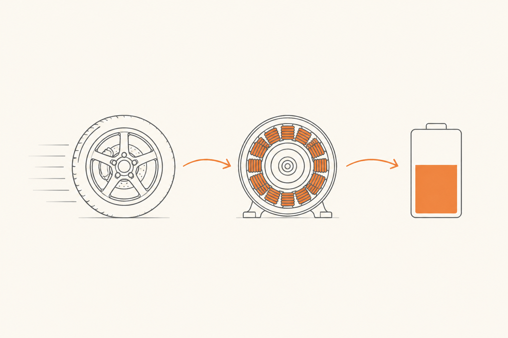

Frenada regenerativa: cuando el calor se convierte en electricidad
Hasta aquí, todo el curso ha estado contando la misma historia: frenar es convertir movimiento en calor por fricción y disipar ese calor al aire. Toca subvertirla. En coches eléctricos e híbridos existe una segunda forma de frenar que no genera calor — recupera la energía como electricidad y la guarda en la batería. Es la frenada regenerativa, y cambia la experiencia de conducir bastante más de lo que parece.
El truco: el motor que se vuelve generador
Un motor eléctrico tiene una propiedad mágica: puede funcionar al revés. Si le metes electricidad, mueve la rueda — eso es ser motor. Pero si la rueda lo hace girar a él (porque el coche está en marcha y el motor está conectado), y tú interrumpes la corriente que lo alimenta, el motor empieza a producir electricidad. Se convierte en generador.
Y aquí está el truco: producir electricidad cuesta esfuerzo. Cualquiera que haya intentado encender una bombilla con una dinamo de bicicleta lo sabe — la rueda gira más dura, hay que pedalear más fuerte. Esa resistencia, en un coche, se siente como una frenada. El motor "frena" porque genera, y la energía cinética del coche se convierte en electricidad que va a la batería.

Por qué es elegante
Compáralo con la frenada de fricción tradicional. Allí, toda la energía cinética se convertía en calor y se tiraba al aire. Energía perdida, sin más. La frenada regenerativa hace algo muy distinto: convierte buena parte de esa energía en electricidad y la guarda. La próxima vez que aceleres, esa energía vuelve a mover el coche.
El resultado es que un coche eléctrico "rinde" más en ciudad que en autopista. Suena contraintuitivo viniendo del mundo de la combustión, pero tiene sentido: en ciudad frenas y aceleras constantemente, y cada frenada recupera energía que vuelve a usar. En autopista vas a velocidad casi constante, hay poca regeneración, y gana el rozamiento aerodinámico. El opuesto exacto del consumo en gasolina.
Y hay un efecto secundario llamativo: las pastillas y discos de un eléctrico apenas se gastan en uso normal. La regenerativa hace casi toda la frenada cotidiana; los frenos mecánicos solo entran cuando frenas fuerte de verdad o cuando ya estás casi parado (porque la regenerativa pierde eficacia a velocidad muy baja).
Frenada mixta: la orquesta
En la mayoría de situaciones, la regenerativa sola no basta. Si necesitas detenerte rápido o desde alta velocidad, lo que el motor puede recuperar como electricidad tiene un techo (la batería no admite más allá de cierto ritmo de carga). Por eso los coches eléctricos modernos hacen frenada mixta: el sistema decide en cada milisegundo cuánto puede absorber la regenerativa y, si hace falta más, mete los frenos mecánicos a completar.
Esto explica algo que sorprende a los técnicos de taller: en el cuadro de un eléctrico, no hay forma de saber si una frenada concreta usó frenos o regen. El conductor no lo distingue tampoco — solo siente que el coche desacelera.
Niveles de regeneración: del coast al one-pedal
Aquí viene un concepto nuevo que cambia cómo se conduce un eléctrico. Un coche con regenerativa puede configurarse con distintos niveles de "intensidad" de regeneración cuando levantas el acelerador. Cuanto más alto el nivel, más frena el coche solo de levantar el pie.
El caso CUPRA Born
Tu propio terreno. El CUPRA Born ofrece varios niveles de regeneración, configurables desde el coche, y por defecto viene en un modo intermedio. Pero ofrece también el modo B en la palanca, que sube la regeneración al nivel alto, y un modo de máxima recuperación accesible desde la conducción dinámica.
Lo que ocurre con muchos clientes que vienen del mundo de la combustión es esto: en la primera prueba, perciben la frenada regenerativa por defecto como "muy agresiva" o "demasiado fuerte al levantar el pie". No es agresividad: es una sensación nueva que su cuerpo no esperaba. Tras una semana, la mayoría se adapta, y muchos pasan a preferir un nivel más alto aún porque conducir con un solo pedal acaba siendo cómodo.
El comportamiento opuesto también existe: clientes que la primera vez piensan "qué raro, no frena al levantar el pie como mi anterior eléctrico" — viniendo de un Tesla con one-pedal por defecto.
La paradoja del freno oxidado
Una consecuencia llamativa de todo esto: en un eléctrico, los discos de freno trabajan tan poco que se oxidan. Una capa fina de óxido superficial aparece en la cara del disco si el coche está parado al exterior unos días. Cuando el cliente vuelve a frenar con cierta firmeza un par de veces, las pastillas raspan ese óxido y todo vuelve a estar limpio. Pero la primera frenada o dos pueden notarse "raras" o "rugosas".
SEAT/CUPRA y otros fabricantes ya saben de esto: lo cubren explícitamente en manuales y en formaciones de concesionario. La acción CX correcta es anticiparlo al cliente — "es normal que después de unos días sin usar mucho los frenos veas un poco de óxido en los discos; con un par de frenadas se va solo" — para que cuando lo descubra ya tenga la explicación. Convertir un posible motivo de queja en información que le hace sentirse cuidado.
La frase que te llevas
La regenerativa convierte la energía cinética en electricidad usando el motor como generador. No reemplaza al freno mecánico — lo complementa. La frenada mixta orquesta ambos. Y la consecuencia para el cliente es una experiencia de conducción nueva (one-pedal), una eficiencia mejor en ciudad, y unos frenos mecánicos que pueden oxidarse por desuso. Todo eso es coherente, no defectuoso.
Con esta píldora cerramos el lado técnico del curso. Quedan dos puntas: el mantenimiento y las señales de alerta (cuándo te tienes que mover), y el cierre desde la lente CX, que es donde tu trabajo arranca.
fácil ¿Por qué un coche eléctrico consume menos en ciudad que en autopista, mientras que uno de combustión hace lo opuesto?
medio ¿Por qué el freno mecánico no desaparece en un eléctrico, si la regenerativa hace casi todo el trabajo?
Por tres razones que se complementan:
1) La regenerativa tiene techo: la batería no puede absorber energía a un ritmo ilimitado. En frenadas muy fuertes, lo que la regen no puede absorber lo tiene que parar el freno mecánico.
2) La regenerativa pierde eficacia a velocidad baja. Cuando el coche está casi parado, el motor genera muy poco. El freno mecánico es quien acaba de detenerlo y quien lo mantiene quieto.
3) Si la batería está llena, no puede aceptar más carga, y la regenerativa se desactiva. En esa situación todo lo frena el freno mecánico. Por eso un eléctrico recién enchufado al 100% en una mañana fría puede sentirse "raro" durante el primer kilómetro.
La regenerativa es elegante y eficiente, pero no autosuficiente. Por eso ningún eléctrico se diseña sin frenos mecánicos — los necesita.
reto Un cliente CUPRA Born te dice: "El primer día que la conduje me asustó cómo frenaba sola al levantar el pie. ¿No es peligroso? ¿No deberían ponerla más suave por defecto?". ¿Cómo le respondes?
Una respuesta posible:
"Lo que sentiste tiene una explicación clara y es totalmente normal. Tu Born usa frenada regenerativa: cuando levantas el pie del acelerador, el motor eléctrico se convierte en generador y frena el coche mientras recarga un poco la batería. Esa sensación de 'frenar sin tocar el freno' es lo que da la regenerativa. No es peligroso — al contrario, te alarga la autonomía y te ahorra desgaste de pastillas."
"¿Por qué viene así por defecto? Porque la mayoría de clientes que conducen un eléctrico una semana acaban prefiriéndolo así, e incluso muchos suben el nivel a one-pedal: conducir solo con un pedal acaba siendo más cómodo y eficiente. Pero si a ti te resulta brusco al principio, podemos ajustar el nivel a uno más suave: tienes opciones desde el menú del coche o moviendo la palanca a B y a D. Te lo enseño en dos minutos. Y dale unos días: muchos clientes después de una semana ya no quieren volver."
La clave CX: nombrar el fenómeno (regenerativa), explicar el porqué (eficiencia, autonomía), reconocer la sensación (es legítimo que extrañe), ofrecer agencia (puedes ajustarlo) y terminar con un patrón conocido ("a la mayoría les pasa al principio"). Eso convierte una queja en una conversación pedagógica sin paternalismo.